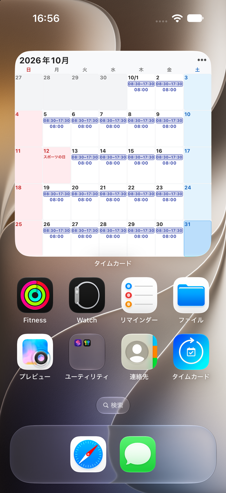
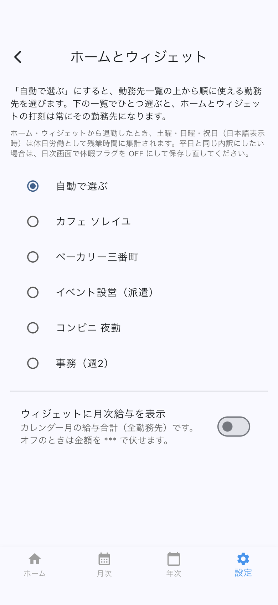

2種類のウィジェット
- 打刻ウィジェット — ホーム画面のボタンから出勤・退勤します。
- シフトカレンダー — ウィジェット一覧での名前は「シフトカレンダー」です。英語表示のときも、この名前のままです。今月のシフトを見て、日をタップするとその日が開きます。
シフトカレンダーを追加する
- ホーム画面を長押しします。
- ウィジェット一覧から「シフトカレンダー」を選び、ホーム画面に置きます。
- 日をタップすると、その日の編集画面が開きます。
iPhone と Android の違い
- iPhone の中サイズは今週です。その週の出勤日数と合計時間も出ます。
- iPhone の大サイズは今月です。
- Android は今月のカレンダーです。
マスは暦月です。各日に始業から終業の時間帯を出します。セルに余裕がある日は、稼働時間も出します。アプリの言語が日本語のときは国民の祝日名を表示し、英語のときは出しません。
予定だけの日は破線で区別します。右上の給与目安は、打刻ウィジェットと同じく表示と非表示を選べます。非表示のときは *** です。給与には実績だけを数えます。

打刻ウィジェットを追加する
- ホーム画面を長押しし、タイムカードの打刻用ウィジェットを追加します。手順は iPhone と Android で異なります。
- アプリ内の設定 → ホーム画面ウィジェットで、打刻に使う勤務先（自動／固定）を選びます。ウィジェットに月次給与の目安を出すかも、ここで切り替えます。
- ウィジェットのボタンから出勤・退勤します。
見た目とサイズは OS の仕様に従います。動かないときは、アプリのホーム画面から打刻してください。
